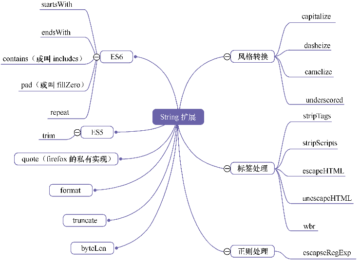

JavaScript框架设计笔记-2-语言模块
浏览器提供的原生API总是不够的，因此各个框架都创造了许多方法来弥补这缺陷。这就是语言模块的来源，即添加许多对字符串、数组、函数…的方法来修复或增强语言的能力。主要介绍了一些非常底层的知识点，让我们更熟悉这门语言。
字符串的扩展与修复
脚本语言都对字符串特别关注，有关它的方法特别多。

wbr来自Tangram，用于软换行，
contains 方法：判定一个字符串是否包含另一个字符串。常规思维是使用正则表达式。但每次都要用new RegExp来构造，性能太差，转而使用原生字符串方法，如indexOf、lastIndexOf、search。1
2
3
4function contains(target, it) {
//indexOf改成search，lastIndexOf也行得通
return target.indexOf(it) != -1;
}
startsWith方法：判定目标字符串是否位于原字符串的开始之处，可以说是contains方法的变种。endsWith方法：与startsWith方法相反。1
2
3
4
5
6
7
8
9
10
11
12
13//最后一个参数是忽略大小写
function startsWith(target, str, ignorecase) {
var start_str = target.substr(0, str.length);
return ignorecase ? start_str.toLowerCase() === str.toLowerCase() :
start_str === str;
}
//最后一个参数是忽略大小写
function endsWith(target, str, ignorecase) {
var end_str = target.substring(target.length - str.length);
return ignorecase ? end_str.toLowerCase() === str.toLowerCase() :
end_str === str;
}
repeat方法：将一个字符串重复自身N次，如repeat（”ruby”, 2）得到rubyruby。
其中有很多方法（具体实现就不写了，给出思想）：
版本1：利用空数组的join方法。
版本2：版本1的改良版。创建一个对象，使其拥有length属性，然后利用call方法去调用数组原型的join方法，省去创建数组这一步，性能大为提高。重复次数越多，两者对比越明显。另外，之所以要创建一个带length属性的对象，是因为要调用数组的原型方法，需要指定call的第一个参数为类数组对象，而类数组对象的必要条件是其length属性的值为非负整数。
版本3：版本2的改良版。利用闭包将类数组对象与数组原型的join方法缓存起来，避免每次都重复创建与寻找方法。
版本 4：从算法上着手，使用二分法，比如我们将ruby重复5次，其实我们在第二次已得到rubyruby，那么第3次直接用rubyruby进行操作，而不是用ruby。
版本5：版本4的变种，免去创建数组与使用jion方法。它的短处在于它在循环中创建的字符串比要求的还长，需要回减一下。
版本6：版本4的改良版。
版本7：与版本6相近。不过在浏览器下递归好像都做了优化（包括IE6），与其他版本相比，属于上乘方案之一。
版本8：通过用数组concat方法，使用递归的方式，可以说是一个反例，很慢，不过实际上它还是可行的，因为实际上没有人将n设成上百成千。
版本6在各浏览器的得分是最高的：1
2
3
4
5
6
7
8
9
10
11
12function repeat(target, n) {
var s = target, total = "";
while (n > 0) {
if (n % 2 == 1)
total += s;
if (n == 1)
break;
s += s;
n = n >> 1;
}
return total;
}
byteLen方法：取得一个字符串所有字节的长度。这是一个后端过来的方法，如果将一个英文字符插入数据库char、varchar、text类型的字段时占用一个字节，而将一个中文字符插入时占用两个字节。为了避免插入溢出，就需要事先判断字符串的字节长度。在前端，如果我们要用户填写文本，限制字节上的长短，比如发短信，也要用到此方法。随着浏览器普及对二进制的操作，该方法也越来越常用。
truncate方法：用于对字符串进行截断处理。当超过限定长度，默认添加3个点号。1
2
3
4
5
6function truncate(target, length, truncation) {
length = length || 30;
truncation = truncation === void(0) ? '...' : truncation;
return target.length > length ?
target.slice(0, length - truncation.length) + truncation : String(target);
}
camelize方法：转换为驼峰风格。1
2
3
4
5
6
7
8function camelize(target) {
if (target.indexOf('-') < 0 && target.indexOf('_') < 0) {
return target;//提前判断，提高getStyle等的效率
}
return target.replace(/[-_][^-_]/g, function(match) {
return match.charAt(1).toUpperCase();
});
}
underscored方法：转换为下划线风格。1
2
3
4function underscored(target) {
return target.replace(/([a-z\d])([A-Z])/g, '$1_$2').
replace(/\-/g, '_').toLowerCase();
}
capitalize方法：首字母大写。1
2
3function capitalize(target) {
return target.charAt(0).toUpperCase() + target.substring(1).toLowerCase();
}
stripTags 方法：移除字符串中的html标签。比如，我们需要实现一个HTMLParser，这时就要处理option元素的innerText问题。此元素的内部只能接受文本节点，如果用户在里面添加了span、strong等标签，我们就需要用此方法将这些标签移除。在Prototype.js中，它与strip、stripScripts是一组方法。1
2
3
4var rtag = /<\w+(\s+("[^"]*"|'[^']*'|[^>])+)?>|<\/\w+>/gi
function stripTags(target) {
return String(target || "").replace(rtag, '');
}
escapeHTML 方法：将字符串经过html转义得到适合在页面中显示的内容，如将“<”替换为“<”`。此方法用于防止XSS攻击。1
2
3
4
5
6
7
8
9
10
11
12
13
14
15function escapeHTML(target) {
return target.replace(/&/g, '&')
.replace(/</g, '<')
.replace(/>/g, '>')
.replace(/"/g, """)
.replace(/'/g, "'");
}
function unescapeHTML(target) {
return String(target)
.replace(/'/g, '\'')
.replace(/"/g, '"')
.replace(/</g, '<')
.replace(/>/g, '>')
.replace(/&/g, '&')
}
escapeHTML和unescapeHTML这两个方法，它们不但在replace的参数是反过来的，replace的顺序也是反过来的。它们在做html parser非常有用的。
pad方法：与trim方法相反，pad可以为字符串的某一端添加字符串。常见的用法如日历在月份前补零，因此也被称之为fillZero。
这个方法也有很多版本，如下版本，支持更多的参数，允许从左或从右填充，以及使用什么内容进行填充。1
2
3
4
5
6
7
8
9
10
11
12function pad(target, n, filling, right, radix) {
var num = target.toString(radix || 10);
filling = filling || "0";
while (num.length < n) {
if (!right) {
num = filling + num;
} else {
num += filling;
}
}
return num;
}
在ECMA262V7规范中，pad方法也有了对应的代替品——padStart，此外，还有从后面补零的方法——padEnd。
数组的扩展与修复
原生方法：
- pop方法：出栈操作，删除并返回数组的最后一个元素。
- push方法：入栈操作，向数组的末尾添加一个或更多元素，并返回新的长度。
- shift方法：出队操作，删除并返回数组的第一个元素。
- unshift方法：入队操作，向数组的开头添加一个或更多元素，并返回新的长度。
- slice方法：切片操作，从数组中分离出一个子数组，功能类似于字符串的。
substring、slice和substr是“三兄弟”，常用于转换类数组对象为真正的数组。
sort方法：对数组的元素进行排序，有一个可选参数，为比较函数。
- reverse方法：颠倒数组中元素的顺序。
- splice方法：可以同时用于原数组的增删操作，数组的remove方法就是基于它写成的。
- concat方法：用于把原数组与参数合并成一个新数组，如果参数为数组，那么它会把其第一维的元素放入新数组中。因此我们可以利用它实现数组的平坦化操作与克隆操作。
- join方法：把数组的所有元素放入一个字符串，元素通过指定的分隔符进行分隔。你可以想象成字符串split的反操作。
- indexOf方法：定位操作，返回数组中第一个等于给定参数的元素的索引值。
- lastIndexOf方法：定位操作，同上，不过是从后遍历。索引操作可以说是字符串同名方法的翻版，存在就返回非负整数，不存在就返回−1。
- forEach方法：迭代操作，将数组的元素依次传入一个函数中执行。Ptototype.js中对应的名字为each。
- map方法：收集操作，将数组的元素依次传入一个函数中执行，然后把它们的返回值组成一个新数组返回。Ptototype.js中对应的名字为collect。
- filter方法：过滤操作，将数组的元素依次传入一个函数中执行，然后把返回值为true的那个元素放入新数组返回。在Prototype.js中，它有3个名字，即select、filter和findAll。
- some方法：只要数组中有一个元素满足条件（放进给定函数返回true），那么它就返回true。Ptototype.js中对应的名字为any。
- every方法：只有数组中所有元素都满足条件（放进给定函数返回true），它才返回true。Ptototype.js中对应的名字为all。
- reduce方法：归化操作，将数组中的元素归化为一个简单的数值。Ptototype.js中对应的名字为inject。
- reduceRight方法：归化操作，同上，不过是从后遍历。
数组的空位
数组的空位是指数组的某一个位置没有任何值。比如，Array构造函数返回的数组都是空位。
空位不是undefined，而是一个位置的值等于undefined，但依然是有值的。空位是没有任何值，in运算符可以说明这一点。1
20 in [undefined, undefined, undefined] // true
0 in [, , ,] // false
由于空位的处理规则非常不统一，所以建议避免出现空位。
ECMA262V5,大多数情况下会忽略空位。比如，forEach()、filter()、every()和some()都会跳过空位；map()会跳过空位，但会保留这个值；join()和toString()会将空位视为undefined，而undefined和null会被处理成空字符串。1
2
3
4
5
6
7[,'a'].forEach((x,i) => log(i)); // 1
['a',,'b'].filter(x => true) // ['a','b']
[,'a'].every(x => x==='a') // true
[,'a'].some(x => x !== 'a') // false
[,'a'].map(x => 1) // [,1]
[,'a',undefined,null].join('#') // "#a##"
[,'a',undefined,null].toString() // ",a,,"
ECMA262V6则是明确将空位转为undefined。比如，Array.from方法会将数组的空位转为undefined，也就是说，这个方法不会忽略空位。扩展运算符（…）也会将空位转为undefined。
数值的扩展与修复
数值没有什么好扩展的，而且JavaScript的数值精度问题未修复，要修复它们可不是一两行代码了事。
一些问题：1
2
3
4
5
6
7
8
9
10
11console.log(0.1 + 0.2)
console.log(Math.pow(2, 53) === Math.pow(2, 53) + 1) //true
console.log(Infinity > 100) //true
console.log(JSON.stringify(25001509088465005)) //25001509088465004
console.log(0.1000000000000000000000000001) //0.1
console.log(0.100000000000000000000000001) //0.1
console.log(0.1000000000000000000000000456) //0.1
console.log(0.09999999999999999999999) //0.1
console.log(1 / 3) //0.3333333333333333
console.log(23.53 + 5.88 + 17.64)// 47.05
console.log(23.53 + 17.64 + 5.88)// 47.050000000000004
这些其实不是bug，而是我们无法接受这事实。在JavaScript中，数值有3种保存方式。
（1）字符串形式的数值内容。
（2）IEEE 754标准双精度浮点数，它最多支持小数点后带15～17位小数，由于存在二进制和十进制的转换问题，具体的位数会发生变化。
（3）一种类似于C语言的int类型的32位整数，它由4个8 bit的字节构成，可以保存较小的整数。
当JavaScript遇到一个数值时，它会首先尝试按整数来处理该数值，如果行得通，则把数值保存为31 bit的整数；如果该数值不能视为整数，或超出31 bit的范围，则把数值保存为64位的IEEE 754浮点数。
这样一个问题：什么时候规规矩矩的整数会突然变成捉摸不定的双精度浮点数？答案是：当它们的值变得非常庞大时，或者进入1和0之间时，规矩矩矩的整数就会变成捉摸不定的双精度浮点数。因此，我们需要注意以下数值。
首先是1和0；其次是最大的Unicode数值1114111（7位数字，相当于（/x41777777）；最大的RGB颜色值16777215（8位数字，相当于#FFFFFF）；最大的32 bit整数是147483647（10位数字，即Math.pow(2,31)-1）；最少的32位bit整数 -2147483648，因为JavaScript内部会以整数的形式保存所有Unicode值和RGB颜色；再次是2147483647，任何大于该值的数据将保存为双精度格式；最大的浮点数9007199254740992（16位数字，即Math.pow（2,53）），因为输出时类似整数，而所有Date对象（按毫秒计算）都小于该值，因此总是模拟整数的格式输出；最大的双精度数值1.7976931348623157e+308，超出这个范围就要算作无穷大了。
大数相加出问题是由于精度的不足，小数相加出问题是进制转算时产生误差。第一个好理解，第二个，主要是我们常用的十进制转换为二进制时，变成循环小数及无理数等有无限多位小数的数，计算机要用有限位数的浮点数来表示是无法实现的，只能从某一位进行截短。而且，因为内部表示是二进制，十进制看起来是能除尽的数，往往在二进制是循环小数。
比如用二进制来表示十进制的0.1，就得写成2的幂（因为小于1，所以幂是负数）相加的形式。若一直持续下去，0.1就成了0.000110011001100110011…这种循环小数。在有效数字的范围内进行舍入，就会产生误差。
综上，我们就尽量避免小数操作与大数操作，或者转交后台去处理，实在避免不了就引入专业的库来处理。
函数的扩展与修复
ECMA262V5对函数唯一的扩展就是bind函数。1
2
3
4
5
6
7
8Function.prototype.bind = function(context) {
if (arguments.length < 2 && context == void 0)
return this;
var __method = this, args = [].slice.call(arguments, 1);
return function() {
return __method.apply(context, args.concat.apply(args, arguments));
}
}
curry、partial的应用场景在前端世界[2]真心不多，前端讲究的是即时显示，许多API都是同步的，后端由于IO操作等耗时长，像Node.js提供了大量的异步函数来提高性能，防止堵塞。但是过多异步函数也必然带来回调嵌套的问题，因此我们需要通过curry等函数变换，将套嵌减少到可以接受的程度。
日期的扩展与修复
Date构造器是JavaScript中传参形式最丰富的构造器，大致分为4种。1
2
3
4new Date();
new Date(value);//传入毫秒数
new Date(dateString);
new Date(year, month, day /*, hour, minute, second, millisecond*/);
其中第3种可以玩多种花样，作者建议只使用“2009/07/12 12:34:56”，后面的时分秒可省略。这个所有浏览器都支持。
浏览器嗅探与特征检测
浏览器嗅探已经不推荐了，但有些时候还是需要的。具体来说就是判断某个对象有没有此方法或属性，严格一些则看看该方法有没有达到预期效果。标准浏览器中提供了document.implementation.hasfeature方法，但不准确。
特性侦测的好处是浏览器不会随意去掉某一个功能，但注意不能使用标准属性与方法做判断依据，每个浏览器都有自己的私有实现，用它们做判定就可以了。
具体的检测方法可以看jquery 1.9以前的嗅探模块源码$.browser
事件的支持侦测
判断浏览器对某种事件的支持,jQuery的实现：1
2
3
4
5
6
7
8
9
10
11
12$.eventSupport = function(eventName, el){
el = el || document.documentElement;
eventNmae = 'on' + eventName;
var ret = eventName in el; // in 操作符用来判断属性是否存在与对象中,无论该属性存在于实例中还是原型中
if(el.setAttribute && !ret) {
el.setAttribute(eventName, '');
ret = typeof el[eventName] === 'function';
el.removeAttribute(eventName);
}
el = null;
return ret;
};
但这种检测只对DOM0事件有效，像DOMMouseSroll，DOMContentLoaded，DOMFocusIn，DOMNodeInserted这些以DOM开头的事件就无能为力了。
样式的支持侦测
一般的方法就是W3C推出CSS.supports方法，该API能够探知浏览器是否支持某种样式。但其实还是有很多无法检测。